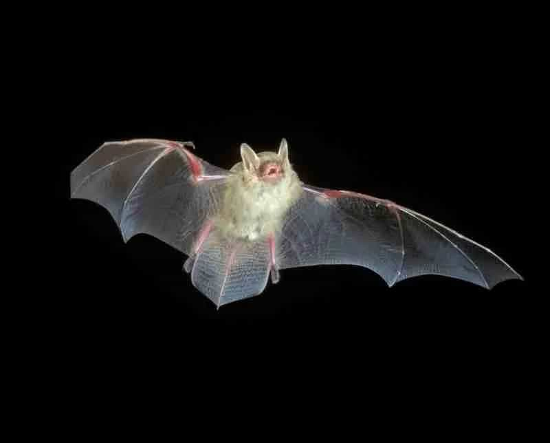

Tricolored bat
Scientific Name: Perimyotis subflavus
Taxon: Mammals
Description: This species relies on forests, woodlands, riparian areas, and caves, with caves being particularly crucial.
Caption: Photo by Dr. J. Scott Altenbach
Found in: 230 counties